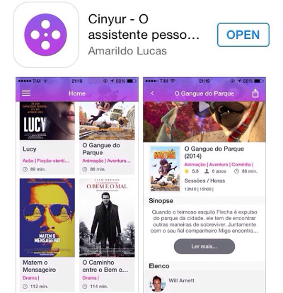

Foi no dia 31 de Outubro de 2014 que foi relançado o applicativo que muitos amantes de cinema em Angola vão admirar e amar. Cinyur o assistente pessoal de cinema agora está disponivel por download na app store. O criador do Cinyur, Amarildo Lucas meu colega no mundo de T.I e amigo no facebook e varias outras redes socias lançou o que eu acho o applicativo mais simples, bonito e intuitivo que já vi no país.
- Assistir os trailers de cada filme em exibição na Cineplace
- Ver as sessões e horários de cada filme
- Conhecer o elenco do filme
- Partilhar as informações sobre os filmes com seus amigos nas redes sociais
- Ler as notícias mais recentes do mundo do cinema
De entre as novidades da versão 1.2 podemos destacar:
Como desenvolvidor cá em Angola vejo poucos desenvolvidores que lançam apps deste nível e acredito que todos nos precisamos trabalhar muito na qualidade dos nossos apps usando conceitos de UX design, criando layouts simples, objectivas, bonitas com um desempenho que agrade o usuario.
Download para Iphone: